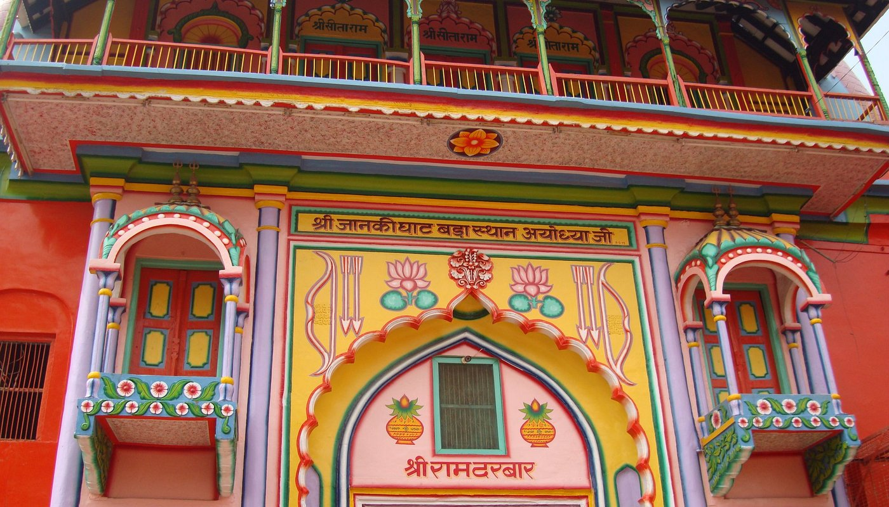
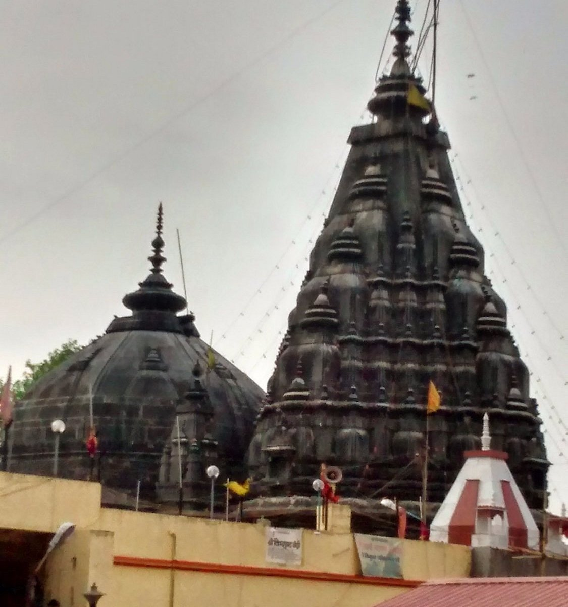
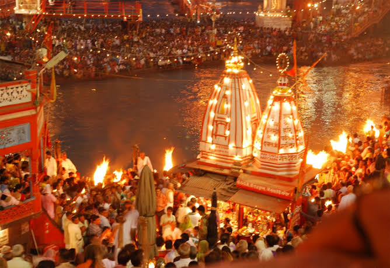
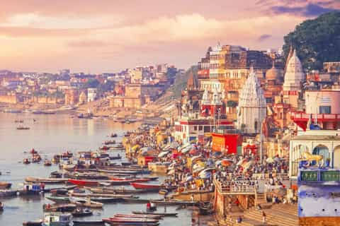
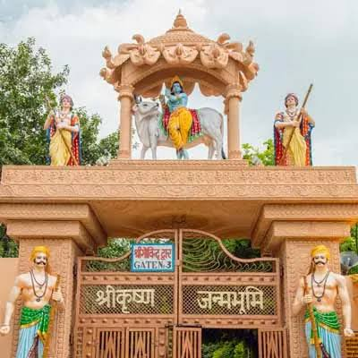
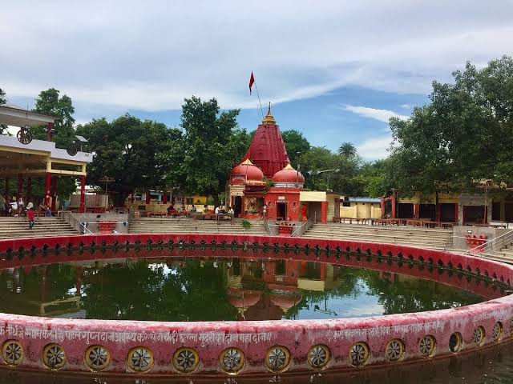

Holy Cities of India
Explore the sacred cities

VARANASI
Welcome to the city of lights! Varanasi is a holy city in India, known for its spiritual significance and beautiful ghats. It is one of the oldest continuously inhabited cities in the world. Also known as "Mokshanagari" according to sacred Hindu scriptures and mythology.

AYODHYA
Ayodhya is a city in Uttar Pradesh known for its religious significance and historical importance. It is the birthplace of Lord Rama and is considered one of the seven most sacred cities in Hinduism. Ayodhya is also famous for its ancient temples, including the Ram Janmabhoomi temple.

GAYA
Gaya is a city in Bihar known for its religious significance and historical importance. It is believed to be the place where Buddha attained enlightenment under the Bodhi tree. Gaya is also famous for the Mahabodhi Temple, a UNESCO World Heritage site.

HARIDWAR
Haridwar is a city in Uttarakhand known for its religious significance and natural beauty. It is one of the seven sacred cities in Hinduism and is famous for the Ganges river ghats, holy ceremonies, and its spiritual atmosphere.

PRAYAGRAJ
Prayagraj, formerly Allahabad, is a city in Uttar Pradesh known for its religious significance and historical importance. It is one of the four Kumbh Mela sites and is famous for the Triveni Sangam, the confluence of the Ganges, Yamuna, and Saraswati rivers.

MATHURA
Mathura is the birthplace of Lord Krishna and a sacred city with a rich cultural heritage.
The city is home to numerous ancient temples and is a popular destination for pilgrims. It is famous for festivals like Janmashtami and its vibrant spiritual culture.
CHITRAKOOT
Chitrakoot is believed to be the place where Lord Rama spent part of his exile.
The town is known for its temples, natural beauty, and spiritual sites along the Mandakini River. It is a popular destination for pilgrims and tourists alike.

NAIMISHARANYA
Naimisharanya is a sacred forest site with deep spiritual history.
The site is known for its ancient temples and mythological importance. It is visited by devotees who come to experience its peaceful atmosphere and cultural heritage.